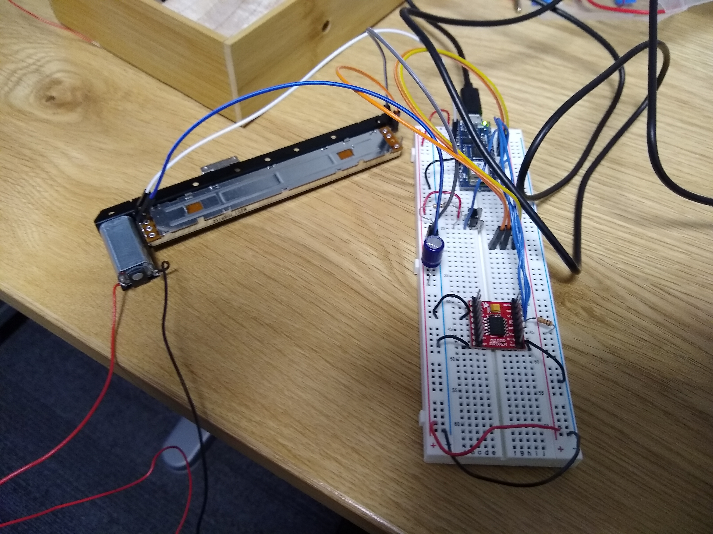
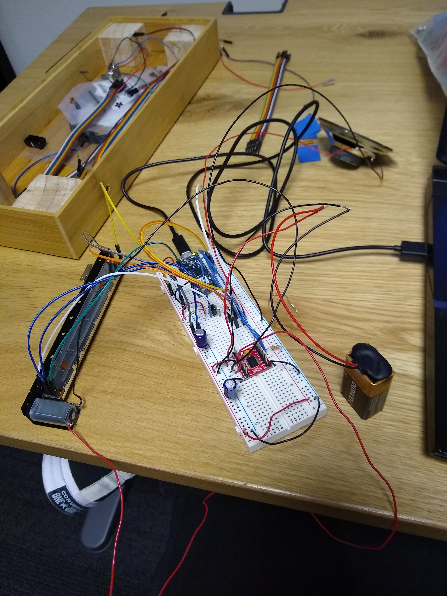
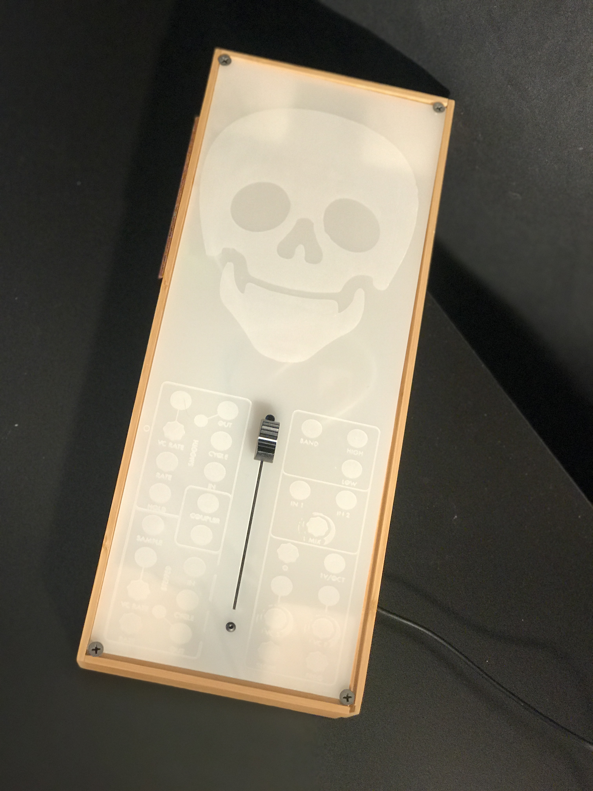
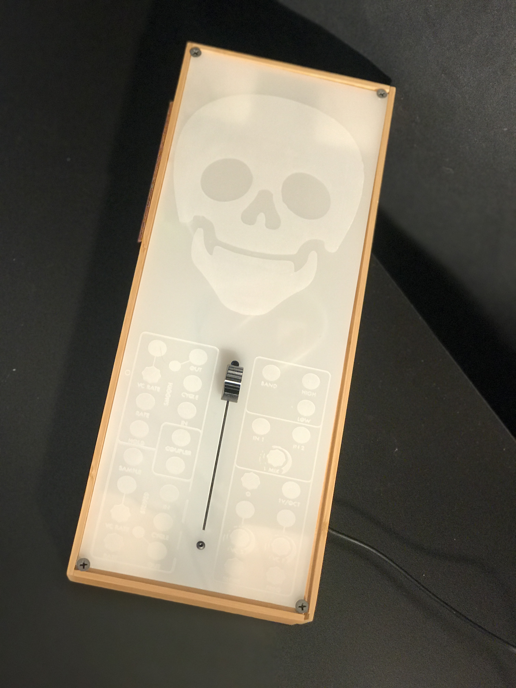

I worked with Ruilin for the physical computation midterm, and after batting around some ideas we settled on a haunted music box. This built off of my final for intro fabrication, where I'd made a box with a volume slider that always went to the top.
We played around with the design of the box for a bit and decided we wanted to have lights that interacted with the music. Our idea was that the music box would play peaceful music when the volume was low, and when the volume was at max it would play spooky music. The motorized potentiometer I had left over from my fabrication project was great for this, if we could figure out how to get it programmed.
Initially, I worked on getting the arduino to track the potentiometer, and then I worked on getting it to move the potentiometer based on where it sensed the potentiometer was. This required the use of a sparkfun motor driver, since I wanted to give different commands to the motor and move it in different directions.
I ran into two big problems with this: one is that the 3.3 volts which the arduino nano provides is not enough to power the motor, and the other is that the documentation on the Sparkfun motor is incredibly scant and of low quality, so I really had no idea how the pins worked. After some playing around and examining images on the internet, and after more talking with my teacher, I found out that the 1, 2, and 3 pins tracked the potentiometer slider (1 and 3 were ground and 5v, and 2 was the wiper wire), the T pin tracked touch (which I tracked as a binary digital read in the Arduino) and then the other three pins I didn't care about. I wired a 9v battery into the motor driver and set up the potentiometer, and I could track it just fine! I was also able to power the motor to move the potentiometer when it was below a certain threshold, which is what we wanted for our project.
 Once the potentiometer was working, we had to integrate it with the other parts of our project, which were the lights and the audio. This turned out to be the incredibly hard part, since while all of these programs worked on their own they did NOT like being together. When we attempted to combine the the lights code with the potentiometer code, the Arduino couldn't handle doing both at once because of how we'd structured the delay function.
The audio was also a problem -- playing audio through an Arduino means you can typically only do beeps and boops, and the way audio is handled means you need to use the millis() function rather than delay. Since we didn't have a lot of time, we opted to run the audio through a P5 sketch instead, which worked well since we could get the serial communication from the Arduino. The problem here is that the music was playing very slowly, and we couldn't figure out how to get it to play faster.
 
Comments? Questions? Concerns? Email me
here!

Comments? Questions? Concerns? Email me
here!